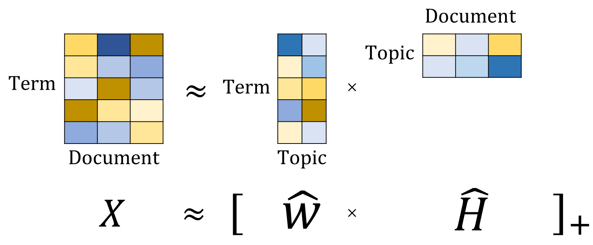
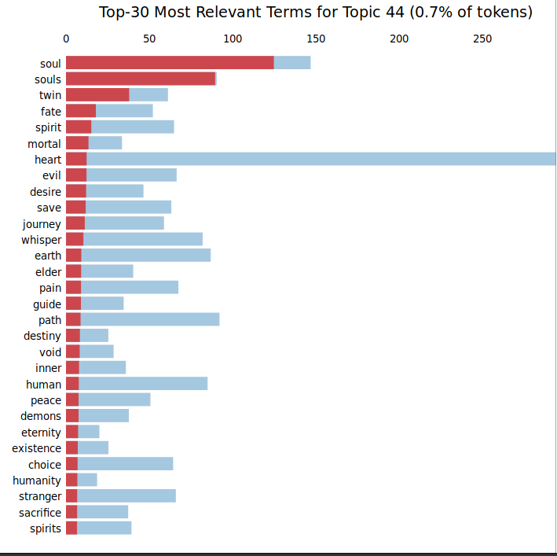

Neural Text Generation with Language Models
Enrique Manjavacas
- Neural Model deemed too dangerous to be released!
- Ludicrous amount of computing resources
- Trained on 40GB: about 12,000 times Tolstoy’s “War and Peace”
- Scaling up leads to suprising levels of output coherence

Workhorse behind current NLP: Language Modeling
NLP’s ImageNet moment
http://ruder.io/nlp-imagenet/ (Sebastian Ruder)
- Database of image annotations for Object Classification (> 1M)
- In progress since 2009; collected with Mechanical Turk
- ImageNet Large Scale Visual Recognition Challenge (ILSVRC)
- Responsible for resurgence of Neural Networks: AlexNet (2012)

ImageNet Moment: Pre-training
- Representational learning: let the algorithm find out what are good features

ImageNet Moment: Pre-training
- Representational learning: let the algorithm find out what are good features
- Neural Network training can be improved by Transfer Learning:
- Pre-train on a related task with large quantities of data
- Fine-tune on the desired task or …
- … train a classifier on the learned features/representations
ImageNet Moment: Pre-training
- Early ImageNet example: DeCAF (2014)
- Apply features extracted from AlexNet to related tasks
- Scene recognition
- Bird recognition
- Achieved SoTA with linear classifiers and small training data
Language Modeling as pre-training task for NLP

Chronology
- UMLFiT (Jan 2018): Universal Language Model Fine-tunning for Text Classification
- ELMO (Mar 2018): Embeddings from Language Models (Best paper award NAACL2018)
- BERT (Oct 2018): Bidirectional Encoder Representations from Transformers (Best paper award NAACL2019)
- GPT-2 (Feb 2019): Generative Pre-Training
- XLNet (Jun 2019): Generalized Autoregressive Pretraining for Language Understanding
- ALBERT (Sep 2019): A Lite Bert for Self-Supervised Learning of Language Representations
Language Modeling
- Classic Natural Language Processing (NLP) task (back to the 80s)
- Shows up as component of classic applications such as:
- Speech Recognition
- Spelling Normalization
- Word prediction (in cell-phones)
- Machine Translation
- …
Intuition
- Model that assigns high probability to plausible sentences like:
- “The cat sat on the mat.”
- “Pierre Vinken, 61 years old, will join the board as a non-executive director.”
- … and low probability to unlikely sentences like:
- “cat on mat The the sat”
- “Colorless green ideas sleep furiously”
Formalism
Decompose the probability of a sentence based on the chain-rule
\(P(The, cat, sat, on, the, mat, .)\) =
\(P(The | \text{<}start\text{>})\)
* \(P(cat | \text{<}start\text{>} , The)\)
* \(\ldots\)
* \(P(. | \text{<}start\text{>} , \ldots , mat)\)
Estimating the probability of a sentence
⟹ simplifies to ⟹
Estimating the probability distribution of the next word
Implementation: Count-based approaches
Markovian assumption
The probability of a word at position \(n + 1\) depends on the \(n\) previous words (n-gram)
- Count-based estimation of probabilities
- The art relies on extrapolating probabilities to unseen n-grams:
- Smoothing: distribute part of the probability mass over unseen n-grams
- Back-off models: fall back to lower order models for unseen n-grams
Implementation: Neural-based approaches

Fitness of Language Modeling as pre-training for NLP
- Autoregressive: LM does not require manual annotation (as opposed to ImageNet)
- Requires modeling a lot of linguistic and extra-linguistic (word-knowledge) information
- “The service was poor but the food was …”
- Syntax & Semantics: “but” introduces contraposition
- Select conceptual field of positive food descriptors
- Long-term dependencies (Linzen et al 2016):
- “Yet the ratio of men who survive to the women and children who survive is not …”
Language Models as Text Generators
Discriminative vs Generative Models
- Discriminative models target \(p(y | x)\)
- Directly model the conditional probability for classification
- Discriminative models have better asymptotic error rates
- Generative models target \(p(x | y)\).
- Model the data distribution and classify by applying Bayes rule
- Generative models achieve their asymptotic error rate faster (less data)
- Generative models allow for sampling from the data distribution
Language Model as a Generator
A LM models the probability of the next word given the context
- For a number of desired target words:
- Sample a word from the current model output distribution
- Feed the new word back into the model
Notebook 3.1

Modeling Scales
1. Traditional Modeling Scales
- Word-level
- ✔ Less steps involved in any word-to-word dependency
- ✗ Exploding vocabulary and memory footprint
- Character-level
- ✗ More steps involved in any word-to-word dependency
- ✔ Memory-wise unproblematic
2. Innovative Modeling Scales: Hierarchical Models
Best of both worlds? Model features at multiple scales and predict character-level output
3. Innovative Modeling Scales: Subword Models
Exploit compositional morphology and word-frequency to limit the vocabulary yet maximize the number of words that the model can process
- Different segmentation algorithms (motivation coming from NMT):
- Byte-Pair Encoding (BPE)
- SentencePiece
- Parametrized over the exact number of items in the vocabulary
- Equivalent to character-level or word-level in the extremes
(Example with vocabulary of 2000 words on a Guttenberg sonnets corpus)
for thy neglect of truth in beauty dyed
(Example with vocabulary of 2000 words on a Guttenberg sonnets corpus)
for thy neglect of truth in beaut- -y dy- -ed
Sampling
- Generation is inherently a stochastic process
- At each step, there is a small probability of sampling an unexpected token
- Cumulatively: \(1 - p(w_1 < p^t, w_2 < p^t, ...)\)
Probability of sampling at least 1 token with \(p^t<0.1\) over \(n\) tokens
1. Temperature (\(\tau\))
Increase the certainty (skewness, spikiness) of the predictive distribution to avoid sampling low probability tokens
- \(w_t \sim P(w_t| w_1, ..., w_{t-1})\)
- \(w_t = \{p_1, p_2, ..., p_v\}\)
- \(p_i^{\tau} = \frac{p_i / \tau}{\sum_j^V p_j / \tau}\)
Trade-off between grammaticality and interest
- Lower \(\tau\) leads to more grammatical but less interesting output
- Higher \(\tau\) leads to increasingly wrong but more diverse output

2. Top-K Sampling (Fan et al., 2018)
- Temperature fails when the predictive distribution is already flat
- Solution: truncate the distribution to the top-k components
3. Nucleus Sampling (Holtzman et al., 2019)
- Top-K Sampling is insensitive to changes in entropy of the distribution
- Solution: Truncate the distribution to the top-p cumulative probability
Controlling Aspects of the Output
- Conditional Embeddings
- Topic Mixture Models
- Sequential Conditioning
1. Conditional Embeddings (Ficler et al, 2017)
Conditional Language Model: probability of a sentence conditioned on contextual variables
\(P(So, glad, to, see, this, movie, ! | Sentiment=Positive, ...)\)
Implementation
- Contextual variables correspond to a embedding matrices
- At training, the correct embedding is concatenated to the input
- At generation, the desired embedding is selected
Implementation with an RNN

Examples from Ficler et al. 2017
1. Conditional Embeddings: DeepFlow
- Project involving generated Hip-Hop and a large-scale experiment at LOWLANDS 2018
- Interested in the ability of different models to fool humans
- Use CLMs to control rhyme and verse length (rhythm)
Rhyme: Condition on last stressed syllable nucleus (approximation!)
| I | like | it | like | that! | Hey | windows | down |
| AY1 | L-AY1-K | IH1-T | L-AY1-K | DH-AE1-T | H-EY1 | W-IH1-N-D-OW0-Z | D-AW1-N |
| I've | got | nothing | to | worry | about |
| AY1-V | G-AA1-T | N-AH1-TH-IH0-NG | T-OW1 | W-ER1-IY0 | AH0-B-AW1-T |
Rhythm: Condition on verse length in number of syllables
- Segment verse length into bins:
- (1-10)
- (10-15)
- (15-20)
- >20
Extract templates from original corpus for improved realism
- Can humans be fooled about artificial Hip-Hop?
- Large-scale (+700) evaluation of 3(x2) models
- Can humans be fooled about artificial Hip-Hop?
- Large-scale (+700) evaluation of 3(x2) models

2. Topic Mixture Model
Topic Modeling with Non-Negative Matrix Factorization
Topic Modeling with Non-Negative Matrix Factorization
Topic as a distribution over words
Topic-LM Mixture Model through interpolation
- \(p_{LM}(w_t) = p_{LM}(w_t | w_1, ... w_{t-1})\)
- \(p_{T_i}(w_t) = p(w_t | T_i)\)
- \(p(w_t | w_1, ..., w_{t-1}, T_i) = \lambda * p_{LM}(w_t) + (1-\lambda) * p_{T_i}(w_t)\)
- Sampling from the interpolation bias the model towards the selected topic(s)
3. Sequential Conditioning: Grover (2018; Zellers et al, 2019)
GPT-2 based model to generate/detect disinformation pieces
3. Sequential Conditioning: Grover (2018; Zellers et al, 2019)
- Intractable target: \(p(domain, date, authors, headline, w_1, ..., w_t)\)
- Assume fixed dependency order and apply the LM decomposition:
- \(p(w_t | domain, date, authors, headline, w_1, ..., w_{t-1})\)
- Requires no changes to the LM architecture (only corpus reformatting)
- https://grover.allenai.org/
3. Sequential Conditiong: CTRL(Keskar et al, 2019)
- Exploit semi-structured information from web-pages (control-codes):
- URL, html title, …
- Domain (Wikipedia, Gutenberg, Amazon Reviews, …)
- Subreddit (
r/computing,r/offmychest, …)
- Prepend to the text snippets
3. Sequential Conditiong: CTRL(Keskar et al, 2019)
Conclusions
- Free text generation is becoming increasingly realistic and pervasive
- Online comments, reviews [https://arxiv.org/pdf/1909.11974.pdf]
- Newspaper content [https://arxiv.org/pdf/1905.12616.pdf]
- Recipes: [https://arxiv.org/pdf/1909.00105.pdf]
- Urgent topics include:
- Characterizing (the perception of) artificial texts by humans
- Exploring new application domains for text generators
- Protecting from malicious uses of artificial text